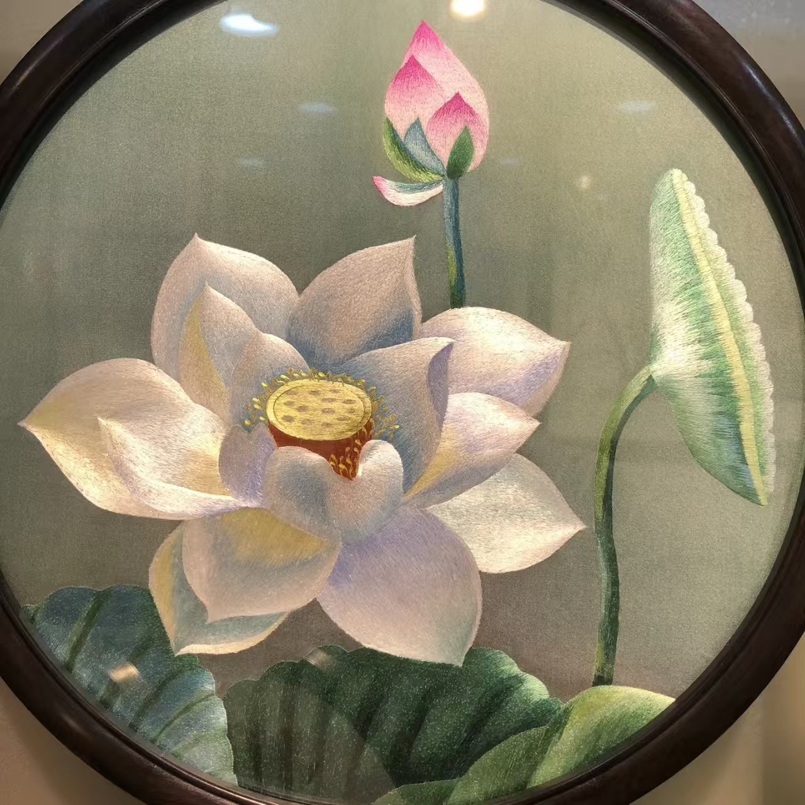

蜀绣
四大名绣之一 · 四川成都 · 国家级非物质文化遗产

一、技艺简介
蜀绣，又称"川绣"，是以四川成都为中心的刺绣品种，是中国四大名绣之一。蜀绣以软缎和彩丝为主要原料，针法严谨、色彩明快、气韵生动，具有浓郁的地方特色和独特的艺术风格。蜀绣以"平、齐、细、密、匀、顺、和、光"八字为绣艺要诀，作品多以芙蓉锦鲤、熊猫、花鸟等蜀地特色题材著称，被誉为"蜀中瑰宝"。
蜀绣的艺术品格在于"严谨中的灵动"。蜀绣艺人以极致的耐心和精湛的技艺，将巴蜀大地的灵秀与生机绣入每一幅作品之中。蜀绣的针法严谨而不失灵动，色彩明快而不失典雅，既有工笔画的精致细腻，又有水墨画的意境神韵。蜀绣作品是蜀地自然风光与人文精神的诗意表达，承载着巴蜀儿女对美的独特理解和不懈追求。
二、历史渊源
蜀绣历史悠久，最早可追溯至先秦时期。汉代扬雄在《蜀都赋》中记载："锦布绣望，芒芒兮无幅"，可见当时蜀地刺绣已相当发达。唐宋时期，蜀绣成为宫廷贡品，享誉全国。清代蜀绣与苏绣、湘绣、粤绣并称"四大名绣"，奠定了其在刺绣艺术中的崇高地位。
2006年，蜀绣被列入国家级非物质文化遗产名录，成为巴蜀文化的重要代表。蜀绣的保护与传承受到高度重视，成都等地建立了蜀绣传承基地和博物馆，培养了一批新一代蜀绣传承人。
三、主要针法
- 晕针：蜀绣特有针法，色彩过渡自然柔和，适合表现花瓣、羽毛等细腻层次
- 铺针：大面积平铺绣制，平整光滑，适合表现背景和服装
- 滚针：绣线紧密排列，适合表现线条和轮廓，流畅自然
- 切针：短针相接，适合表现细微纹理和渐变效果
- 沙针：稀疏排列，适合表现光影效果和透气感
四、制作工序
- 设计：以蜀地风物为题材，设计绣稿，确定构图和配色
- 选料：精选软缎、彩丝等材料，要求质地细腻、色泽光亮
- 上绷：将布料绷在绣架上，保持平整紧绷
- 刺绣：运用晕针、铺针等多种针法精细绣制，针脚均匀整齐
- 调整：调整绣面，确保色彩过渡自然、层次分明
- 装裱：完成绣品后进行装裱，提升观赏效果
五、艺术特色
- 针法严谨：蜀绣针法规范、排列整齐，体现了蜀地匠人的严谨与专注
- 色彩明快：色彩鲜明而不失雅致，充满巴蜀大地的生机与活力
- 题材鲜明：以芙蓉、锦鲤、熊猫等蜀地特色题材著称，地域风格浓郁
- 气韵生动：作品既有工笔画的精细，又有水墨画的意境，气韵生动传神
六、图案寓意
- 芙蓉：成都市的市花，象征富贵吉祥、美丽高洁
- 锦鲤：象征年年有余、好运连连
- 熊猫：蜀地独有的国宝，象征和平友好、吉祥如意
- 牡丹：象征荣华富贵、繁荣昌盛
- 仙鹤：象征长寿延年、健康吉祥
"蜀绣之美，在于针法的严谨与色彩的明快。一针一线间，绣出了天府之国的富庶与灵动，也绣出了巴蜀儿女的智慧与匠心。"